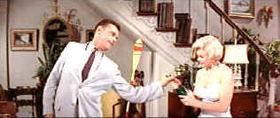

| Seven Year Itch/C+,B+ |
| Fox/1955/110/ANA 2.55 |
The Seven Year Itch hardly worth the effort to scratch. There is Marilyn, of course, shaking her fanny, exposing her gams and performing at her breathtakingly sexiest. That alone makes parts of the flick worth digesting. Still, the movie is a tired, static adaptation of a hit stage play about New York's summer "bachelors." When the wife's away the guys will play is the somewhat smutty starting point for a plot more like a rash that an itch.
 |
| The best vintage in this film in Monroe. ©Fox |
I found The Seven Year Itch to be extremely dated. Richard Sherman is a mousy
executive left with fantasies to sustain himself while his family sojourns upstate for the summer.
The summer heat wave turns into a search for a cooler place when a hot blonde sublets an upstairs
apartment. There’s a licentious scent that
pervades every leering scene. Sherman invites her in for a drink with lascivious bumbling and the
brassy blonde wiggles her way into his apartment which has air conditioning, a not yet standard
luxury in 1950's New York. Whatever can you make of the blonde?’ Is she ready
to bed down for nothing more than a cool breeze? Or is there some other strange motivation that lures her into his apartment?
Air conditioning? Can you really seduce a dish with curve from New York to New Jersey with a rush of cold air?
Not likely, even in this middling fantasy of mid-life crisis.
There are some funny moments. After all, this is directed by Billy Wilder, but
Wilder seems released from the trap of the stage play only when he and the camera are busy ogling
Monroe.
Monroe is a delicious dish. Every time she's on the screen the stiff plot comes to life, but Tom Ewell is a major annoyance from start to finish.
If Ewell doesn’t get on your nerves, the adaptation of the successful stage play may not be such
a disappointment.
The blonde lighting of Monroe's screen appeal strikes powerfully in this
DVD transfer. Source elements are in excellent condition. Other than some slight pulsing at scene
transitions, the color is vital and fresh with stable saturation. You don't need a lot of detail to
appreciate Monroe, but the DVD is sharp enough to check out her measurements and even count the
blonde hair from various positions. There's not much subtlety to the photography. It a straight up
New York cocktail mostly confined to apartment interiors. The contrast range packs plenty of punch.
The Dolby Digital surround is presented in 3.0 stereo with dialogue crisply enunciated.

Selections from the Feature Archive
include articles on Akira Kurosawa, Frank
Darabont, Blonde Bimbos, Hollywood Street Gangs, or Vietnam: The
Hollywood Pariah, and many more....
.jpg)
Screen Voices and style of delivery often stamp an actor's screen
image indelibly. Click the lips to read more.

The Movie Poster Archive includes extensive poster images from the films of stars like Susan Hayward, Kirk Douglas, Katharine Hepburn and many more. Our featured star is Lana Turner.

Annie Get Your Gun/A,A-
Irving Berlin's brilliant musical gem is polished and preserved on this Warner DVD release. An
explosion of music, song, dance and color.


ISF Monitor Calibrations in the
Tristate New York area. Lots of hardware info and frequent hardware peaks from video expert Kevin
Miller.They may be judgmental, but that's the point, isn't it. Lots of DVD reviews plus news and
more.
 Have you visited Home Theater
Talk lately? One of the friendliest places on the Net for Home Theater and DVD discussion, you
can get help for installation problems or simply share your opinions with other Vidiots.
Have you visited Home Theater
Talk lately? One of the friendliest places on the Net for Home Theater and DVD discussion, you
can get help for installation problems or simply share your opinions with other Vidiots.